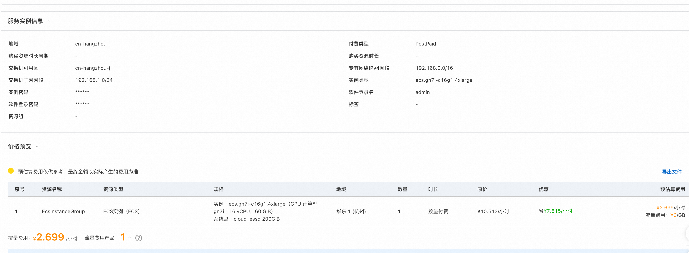
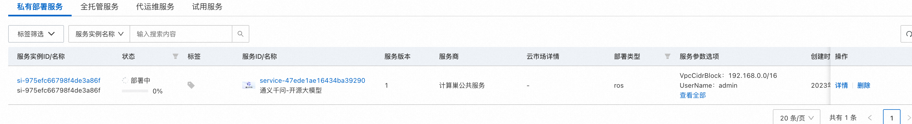
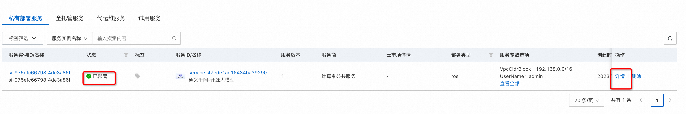
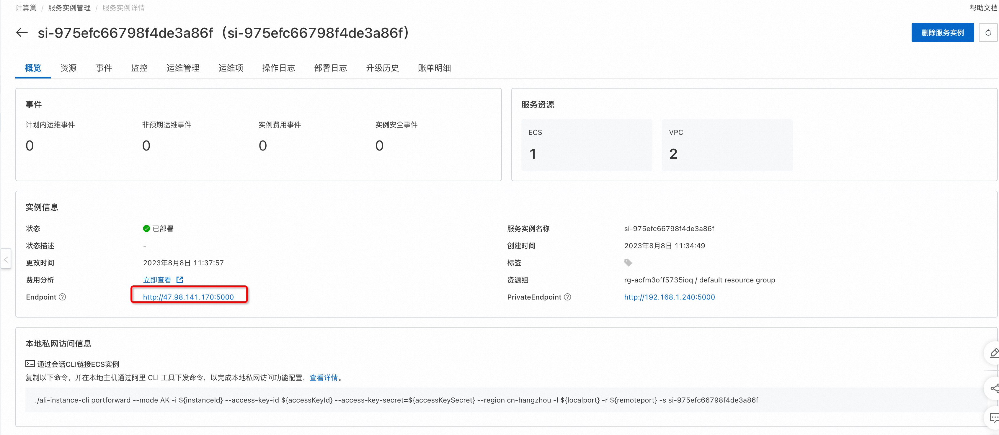
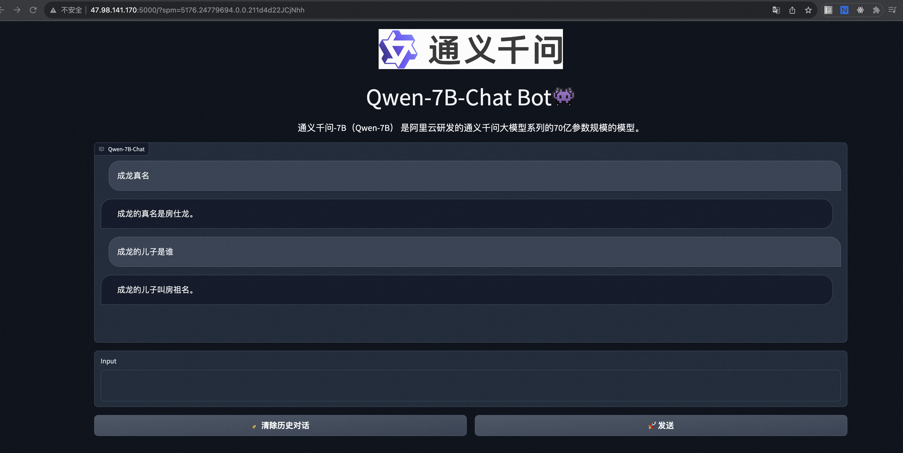

服务模版说明文档
服务说明
本文介绍基于通义单机gpu实例ecs服务快速上手流程，本示例对应的git地址
本示例会自动的构建计算巢服务，具体的服务构建流程为 1. OOS ACS-ECS-UpdateImage模版执行命令构建ecs镜像 2. 通过构建好的ecs镜像创建ECS镜像部署物并完成分发 3. 创建计算巢服务并关联镜像部署物
创建过程大约持续50分钟，当服务变成待提交后构建成功
部署架构
本部署架构为单机ecs部署，通过公网ip 8080端口访问

服务构建计费说明
测试本服务构建需要支付构建镜像过程中的ECS费用，请确保账号中有足够的余额，创建服务实例涉及的费用参考服务实例计费说明
RAM账号所需权限
本服务需要对ECS、VPC等资源进行访问和创建操作，若您使用RAM用户创建服务实例，需要在创建服务实例前，对使用的RAM用户的账号添加相应资源的权限。添加RAM权限的详细操作，请参见为RAM用户授权。所需权限如下表所示。
| 权限策略名称 | 备注 |
|---|---|
| AliyunECSFullAccess | 管理云服务器服务（ECS）的权限 |
| AliyunVPCFullAccess | 管理专有网络（VPC）的权限 |
| AliyunROSFullAccess | 管理资源编排服务（ROS）的权限 |
| AliyunComputeNestUserFullAccess | 管理计算巢服务（ComputeNest）的用户侧权限 |
| AliyunComputeNestSupplierFullAccess | 管理计算巢服务（ComputeNest）的服务商侧权限 ｜ |
服务实例计费说明
测试本服务在计算巢上的费用主要涉及：
- 所选vCPU与内存规格
- 系统盘类型及容量
- 公网带宽
计费方式包括：
- 按量付费（小时）
- 包年包月 预估费用在创建实例时可实时看到。
部署流程
部署参数说明
| 参数组 | 参数项 | 示例 | 说明 |
| --- | --- | --- | --- |
| 服务实例名称 | | test | 实例的名称 |
| 地域 | 部署地域 | 新加坡 | 选中服务实例的地域，因为一些模型在国内无法下载访问，建议选择中国香港或海外地域 |
| 可用区配置 | 部署区域 | 可用区I | 地域下的不同可用区域 |
| 付费类型配置 | 付费类型 | 按量付费 或 包年包月 | |
| ECS实例配置 | 实例类型 | ecs.gn6i-c4g1.xlarge | 实例规格，可以根据实际需求选择 |
| ECS实例配置 | 实例密码 | | 设置实例密码。长度8，30个字符，必须包含三项（大写字母、小写字母、数字、()`!@#$%^&*-+={}[]:;'<>,.?/ 中的特殊符号） |
| 登录信息 | 软件登录名 | admin | 设置软件登录名，默认为admin |
| 登录信息 | 软件登录名密码 | | 设置软件登录密码 |
| 网络配置 | 专有网络IPv4网段 | 192.168.0.0/16 | VPC的ip地址段范围 |
| 网络配置 | 交换机子网网段 | 192.168.0.0/24 | 交换机子网网段 | |
部署步骤
-
登录阿里云计算巢控制台找到对应的服务点部署链接进入部署


-
勾选我已阅读并同意《计算巢服务协议》，点击"立即创建"按钮。 

-
查看部署进度。 点击去列表页查看，可以看到刚刚创建的服务实例以及服务部署进度。 
-
访问等待状态变为"已部署"后，点击详情，进入对应的服务实例后，可以在页面上获取Endpoint以访问服务。 
-
点击Endpoint后面的链接，输入第1步设置的软件登录名及密码。 
-
完成验证后即可访问： 
服务详细说明
基于ecs镜像的部署流程详细参见springboot ecs单机版构建，本文只介绍gpu和软件构建的具体步骤
- ecs构建基于gpu镜像执行命令 安装基础环境和git下载软件，配置在config.yaml中
# openssl
wget https://www.openssl.org/source/openssl-1.1.1n.tar.gz --no-check-certificate
tar -zxvf openssl-1.1.1n.tar.gz
cd openssl-1.1.1n
./config --prefix=/usr/local/openssl
make -j && make install
openssl version
ln -s /usr/local/openssl/bin/openssl /usr/bin/openssl
sudo ldconfig
export LD_LIBRARY_PATH=/usr/local/openssl/lib:$LD_LIBRARY_PATH
cd .. && rm -rf openssl-1.1.1n.tar.gz
# 安装python3.8.6
cd /usr/local/
wget https://www.python.org/ftp/python/3.8.6/Python-3.8.6.tgz --no-check-certificate
tar -zxvf Python-3.8.6.tgz && rm -f Python-3.8.6.tgz
cd /usr/local/Python-3.8.6/
./configure --prefix=/usr/local/python3 --with-openssl=/usr/local/openssl --with-openssl-rpath=auto
yum install -y libffi-devel zlib zlib-devel bzip2-devel
yum install -y xz-devel
yum install -y python-backports-lzma
yum install -y lzma
yum install -y libX11
yum install -y libXext
make && make install
echo 'export PATH="/usr/local/python3/bin:$PATH"' >> /root/.bashrc
source /root/.bashrc
# 安装git
yum install -y https://packages.endpointdev.com/rhel/7/os/x86_64/endpoint-repo.x86_64.rpm
yum install -y git
# 安装tongyi
cd /root
git clone https://www.modelscope.cn/studios/qwen/Qwen-14B-Chat-Demo.git
# 依赖环境
pip3 install gradio
pip3 install torch
pip3 install modelscope
pip3 install transformers
pip3 install tiktoken
pip3 install transformers_stream_generator
pip3 install accelerate
# 启动预下载模型
mkdir -p /root/.cache/modelscope/hub/qwen
wget https://computenest-data-ap-southeast-1.oss-ap-southeast-1-internal.aliyuncs.com/qwen/Qwen-14B-Chat.tar
tar xvf Qwen-14B-Chat.tar && mv Qwen-14B-Chat /root/.cache/modelscope/hub/qwen/
cd Qwen-14B-Chat-Demo
python3 app.py > /var/log/app.log &
for ((i=0;i<1000;i++))
do
curl 127.0.0.1:7860 > /tmp/health_check
if [ "$?" == 0 ]
then
break
fi
sleep 10
done
- 在template.yaml配置软件启动时根据UserName和Password配置systemctl并给nginx配置账号密码放到/etc/nginx/password中，最终通过systemctl拉起tongyi服务
CommandContent:
Fn::Sub:
# 将master的ip输入到/root/conf.txt
# 可以在后续的步骤中通过conf.txt里的内容完成slave的初始化
- |
#!/bin/bash
cat > /lib/systemd/system/tongyi.service << "EOF"
[Unit]
Description=TongYi Model App
After=network-online.target
Wants=network-online.target
[Service]
ExecStart=/bin/bash -c "cd /root/Qwen-14B-Chat-Demo && python3 app.py"
Restart=on-abnormal
LimitNOFILE=60000
TimeoutSec=120
[Install]
WantedBy=multi-user.target
EOF
cat > /etc/nginx/conf.d/5000.conf <<"EOF"
server {
listen 5000;
server_name _;
root /usr/share/nginx/html;
# Load configuration files for the default server block.
include /etc/nginx/default.d/*.conf;
auth_basic "请输入用户和密码"; # 验证时的提示信息
auth_basic_user_file /etc/nginx/password; # 认证文件
location / {
proxy_pass http://127.0.0.1:7860/;
proxy_http_version 1.1;
proxy_set_header Upgrade $http_upgrade;
proxy_set_header Connection Upgrade;
}
error_page 404 /404.html;
location = /404.html {
}
error_page 500 502 503 504 /50x.html;
location = /50x.html {
}
}
EOF
systemctl daemon-reload
systemctl enable tongyi
systemctl start tongyi
systemctl status tongyi
for ((i=0;i<1000;i++))
do
curl 127.0.0.1:7860
if [ "$?" == 0 ]
then
break
fi
sleep 10
done
htpasswd -bc /etc/nginx/password ${UserName} '${Password}'
systemctl start nginx
systemctl status nginx
systemctl enable nginx
# 执行成功回调WaitCondition结束waitCondition的等待
${CurlCli} -d "{\"Data\" : \"Success\", \"status\" : \"SUCCESS\"}"
- UserName:
Ref: UserName
Password:
Ref: Password
# 获取到waitConditionHandle的地址放到 ${CurlCli}变量里
CurlCli:
Fn::GetAtt:
- WaitConditionHandle
- CurlCli
其他说明
© 2009-2022 Aliyun.com 版权所有